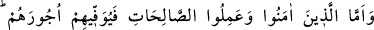
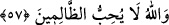
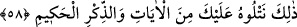

57. Îmân edip iyi davranışlarda bulunanlara gelince, Allah onların mükâfatlarını
eksiksiz verecektir. Allah zâlimleri sevmez.
Sana indirilene “îman edip” mü’minlerin şiârı olduğu üzere “sâlih amel işleyenlere
gelince Allah onların mükâfatlarını tam olarak verecektir.” (Yukarıda muhâtap sîgasıyla
konuşulurken) burada gâib sîgasına geçilmesi, azap ve sevabın kaynaklarının
birbirinden ayrı olduğunu bildirmek içindir. Çünkü birinin kaynağı celâl diğerininki
cemâldir.
“Allah zâlimleri sevmez.” Onlara buğzeder ve onlardan râzı olmaz.
58. (Rasûlüm!) Bu söylenenleri biz sana âyetlerden ve hikmet dolu Kur’ân’dan
okuyoruz.
“İşte biz, bunları sana âyetlerden, hikmet dolu Kur’ân’dan okuyoruz.” Îsâ’nın ve
başkalarının haberleri, bu okuduklarımız âyetlerden ve zikr-i hakimdendir. Yani ey
Muhammed, sana bu okuduklarımız âyetlerden ve hikmetleri sonsuz Kur’ân’dandır.
Âyetleri ve zikr-i hakîmi okuyan Cibrîl olduğu halde Cenâb-ı Hak okuma fiilini,
kendine isnâd etmiştir. Burada meleği yüceltme söz konusudur. Bunun güzelliği
şuradadır: Cibrîl’in tilâveti hilâfsız Cenâb-ı Hakk’ın emriyle olmakla fiil doğrudan
Cenâb-ı Hakk’a nisbet olunmuştur.
“Âyât” kelimesi mef’ul olan zamirden hâldir. Yani bu âyetler senin risâletinin
sübûtuna delâlet eden alâmetlerdendir. Çünkü bu haberleri ya kitabı okuyanlar bilir,
yahud kendisine vahiy gelenler. Senin yazmadığın ve okumadığın belli olduğuna göre
bunun vahiy olmaktan başka ihtimâli yoktur.
“Zikr”den maksat Kur’ân’dır.
“el-Hakîm” Kur’ân’ın sıfatıdır. Sayısız hikmetleri içinde bulunduran kitap, yahud
muhkem kitap demektir. Muhkem, kendine hiçbir ârızanın yol bulamadığı sağlam
demektir.
Âyetteki işârete gelince: Cenâb-ı Hak Îsâ (a.s.)’a, “Ey Îsâ, ben seni vefat
ettiriciyim” buyurmakla, seni nefsânî sıfatlardan ve hayvânî vasıflardan vefat
ettiriciyim, demek istemiştir. “Seni Zatıma yükselticiyim” demekle “inâyet
cezbeleriyle seni Zatıma çekeceğim” demiştir.
Allah’dan gayrilerden fânî olmayan, Allah’ı tanıma makamına vâsıl olamaz. Îsâ (a.s.)
semâlara yükseltilmekle meleklerin hâliyle hallenmiş oldu. Kendisinden dünyevî
arzular, gazap ve ahlâk-ı zemîme tamamen zâil oldu. Bu sebeple sâlike yaraşan